CUA-SWE: When Computer-Use Agents Meet Visual Software Engineering
Carnegie Mellon University · University of Southern California · University of Wisconsin–Madison · Arizona State University · AWS Agentic AI · *Equal contribution · †Project lead
CUA-SWE provides a benchmark and environment where coding agents need to repair the software by using it and visually inspecting it. Each of the 105 tasks gives the agent an editable project and the running application; deterministic, task-specific tests then judge the repaired software on a clean copy of the project. Across Web, Game, DevOps and Mobile, adding computer use to coding raises task success for all eight API models in the paired comparison.
- 105 repair tasks
- 4 domains: Web 36 · Game 29 · DevOps 20 · Mobile 20
- 11 models and agent systems
- 2 conditions: Code-only, Hybrid
- 63 tasks need application materials, 42 are source-specified
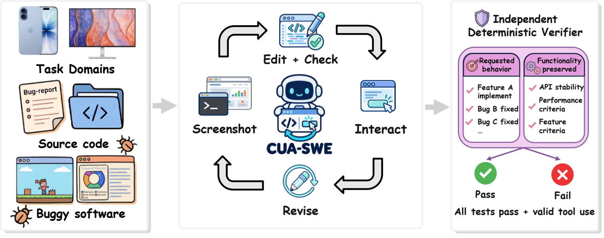
Web Allocation Ring Studio
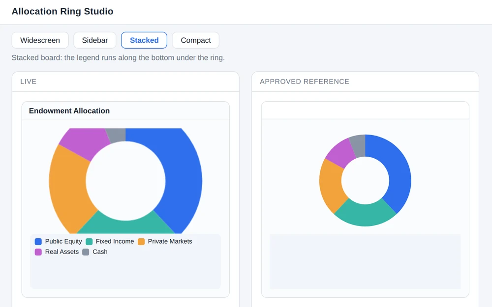
BugRing chart overflows its card in the Stacked layout
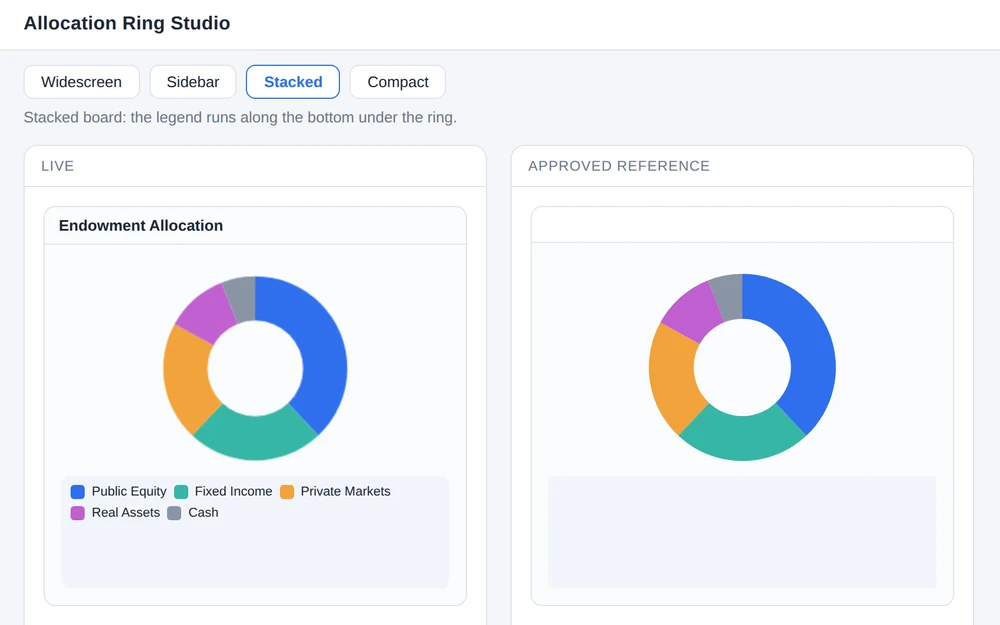
RepairedRing fits every layout profile
Game Vector Relay
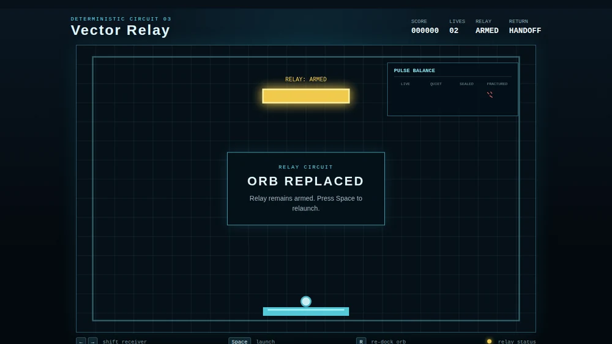
BugReturn fractured, relay stays armed, score 0
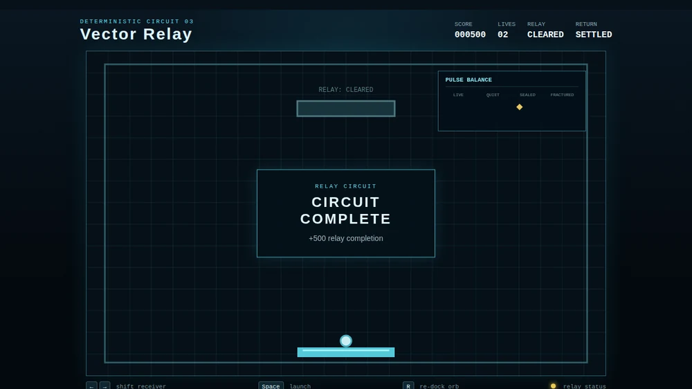
RepairedCircuit complete, +500
DevOps Counter Order Console
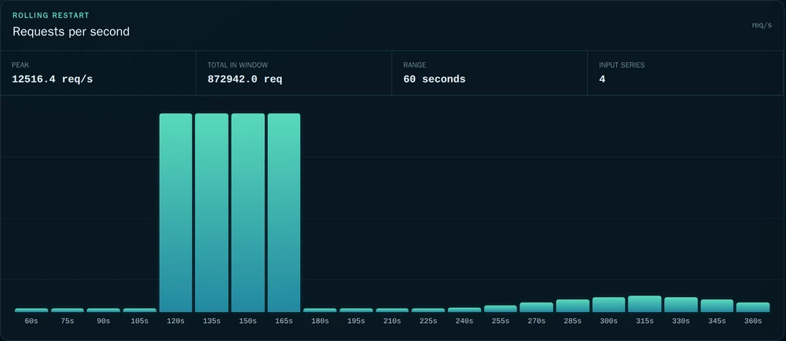
BugRolling restart rendered as a 12,516 req/s spike
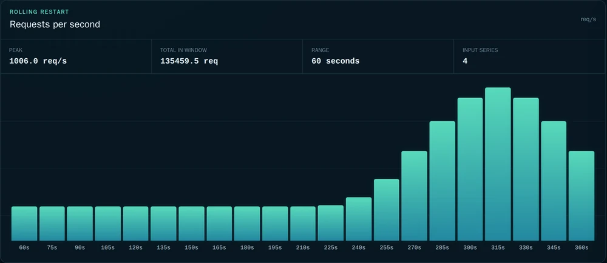
RepairedFalse spike removed, real burst retained
Mobile Mural Desk
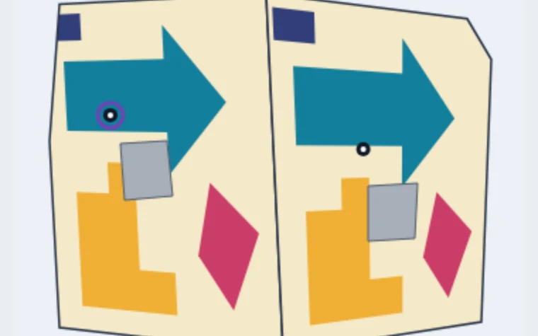
BugArtwork projected onto the wall plan the wrong way
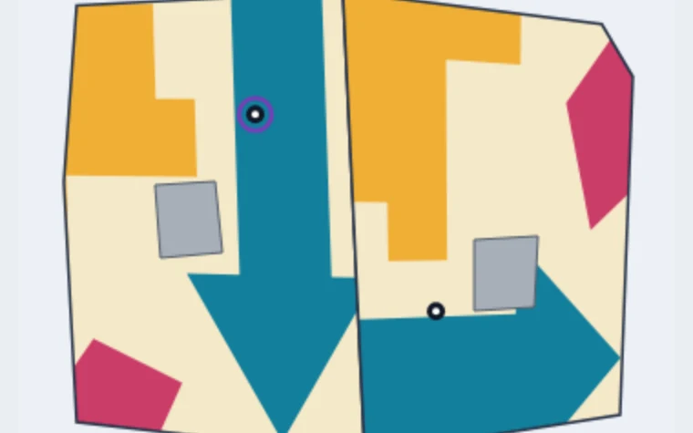
RepairedArtwork aligned to the wall plan
Results
Task success (%) on one selected attempt per task, model and condition. Code-only uses the coding interface: read and edit source, run commands. Hybrid adds computer use: screenshots of the running application and mouse and keyboard actions. Both conditions share the same tasks, budgets and hidden tests, so the gap isolates what visual feedback and interaction contribute.
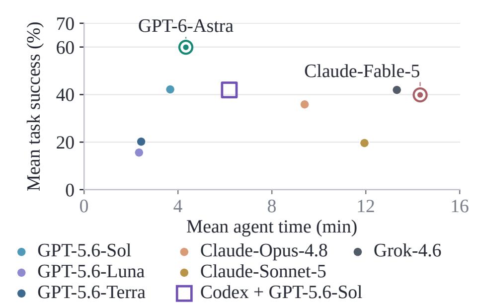
lighter bar: Code-only solid bar: Hybrid (computer use + coding) +pp gain from computer use Hue identifies the model: GPT · Claude · Grok · agent systems
Panel a weights the four domains equally and matches the right panel of Figure 1 in the paper; Opus 5 is omitted because its Mobile evaluation is deferred. Panel c is Figure 6a of the paper (circles: frontier models; open square: Codex). Codex and Claude Code are evaluated as complete agent systems in the Hybrid condition only. Every frontier model gains with Hybrid access; the gains concentrate on tasks whose requirements include application materials (see Analysis).
Single-attempt task success (%) across four domains
Column maxima are in bold. Hover a cell for the number of solved tasks. Each domain retains its original scoring rules: Web success also requires the required visual evidence; DevOps and Mobile exclude infrastructure errors and count genuine agent failures. Table 1 in the paper; Table 4 there reports a three-attempt Hybrid evaluation of GPT-6 Astra, GPT-5.6 Sol and Fable 5.
Examples
Recorded runs, step by step: what the agent saw, what it changed, and what the verifier decided. This one follows GPT-5.6 Sol through a Vector Relay attempt; players for Web, DevOps and Mobile follow the same layout.
Screenshots, patch and verifier result come from this attempt. In the task’s three matched trials, Code-only solved 0/3 and Hybrid solved 1/3.
Tasks
Every task starts from a verified bug in a working application and specifies the failure to fix, the behavior to implement and the existing functionality to preserve. Related variants share application code and test different interactions or configurations.
Web 36 tasks · 20 applications
Interface geometry, selection and application contracts in Fabric.js (9 tasks), MapLibre (7), React Spectrum, Saleor, JupyterLab, Quill, Tiptap, Handsontable, ECharts, Recharts and business workflows such as account recovery, tax rounding and warehouse cutoffs.
Make the account recovery page display the channel selected by the live identity risk policy for the account being viewed, including ACC-731, while preserving the recovery decision trace.
Game 29 tasks · 12 games
Temporal behavior, physics and state transitions in Captain Callisto (7), Boxel Rebound (5), Flappy Bird (4), 2048, Hextris, Minesweeper, Vector Relay, Astray, Core Ball, Letter Arc, Maze Signal and Phase Relay. Tests set initial states, apply inputs and restart with fixed seeds.
The deterministic Level 3 benchmark build contains a gameplay regression. Play the pulse lane and compare the start, release, and restart of several short jetpack bursts.
DevOps 20 tasks · 10 contracts
Operational observations tied to configuration and data-processing semantics: rate before aggregation, alert inhibition, log severity normalization, pending-alert identity, SLO rollups, StatsD gauge modes, tail sampling, trace clock skew and trace context across awaits, on Prometheus, Alertmanager, Jaeger and OpenTelemetry code.
After the collector rollout, failed operations are missing from the log workbench’s severe view while a routine event appears as an error. Investigate the live records and receiver fleet, then repair severity classification.
Mobile 20 tasks · 12 families
Visually specified relationships and editing behavior in mobile-web applications run in Chromium at 400×800: nine Gantt variants plus Mural Desk, Foldnote, Pass wallet, Lamp courier, Northline, Tideglass, Marble Post, Lantern, Campus Pocket and inspection and plate-integration workflows.
Foldnote is a mobile web packaging-proof review mockup. Review markers no longer stay correctly placed and oriented when switching between Flat sheet and Individual panel.
Specification basis
Tasks differ in where their requirements are specified. In source-specified tasks (42), the instruction and readable project code define the target behavior; running the application supports diagnosis and checking. In application-material-dependent tasks (63), part of the behavior is specified only through application materials such as an imported drawing, a displayed service contract or a graphical reference card, which the code-only interface does not expose. Both groups require implementing the behavior and verifying the resulting software.
Two example tasks
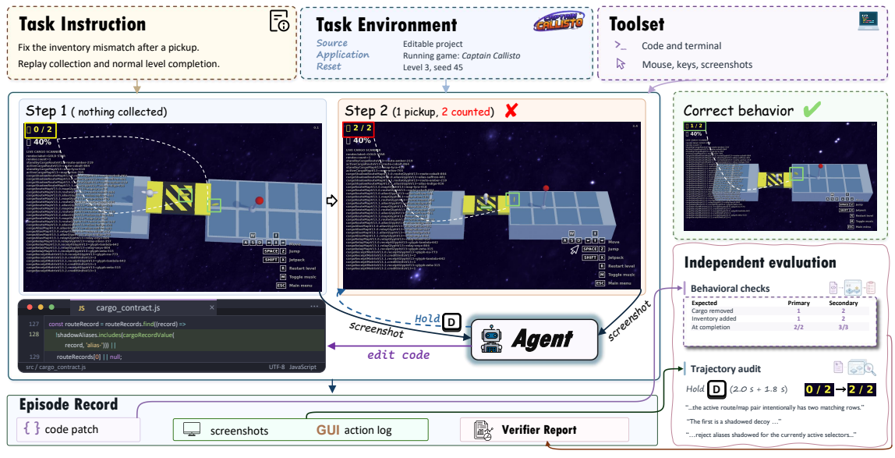
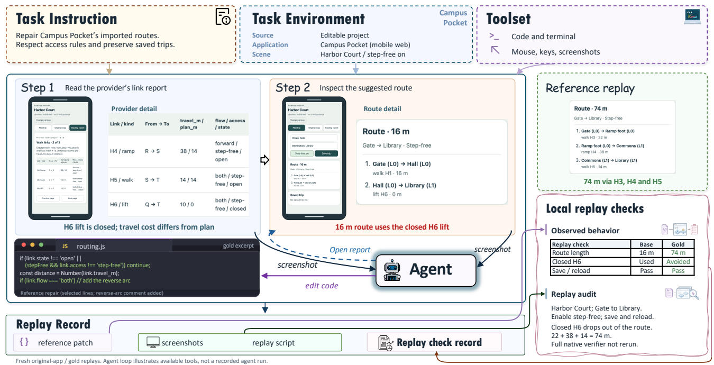
Browse all 105 tasks with their original instructions, budgets and tests
Analysis
Computer use improves task success on every model
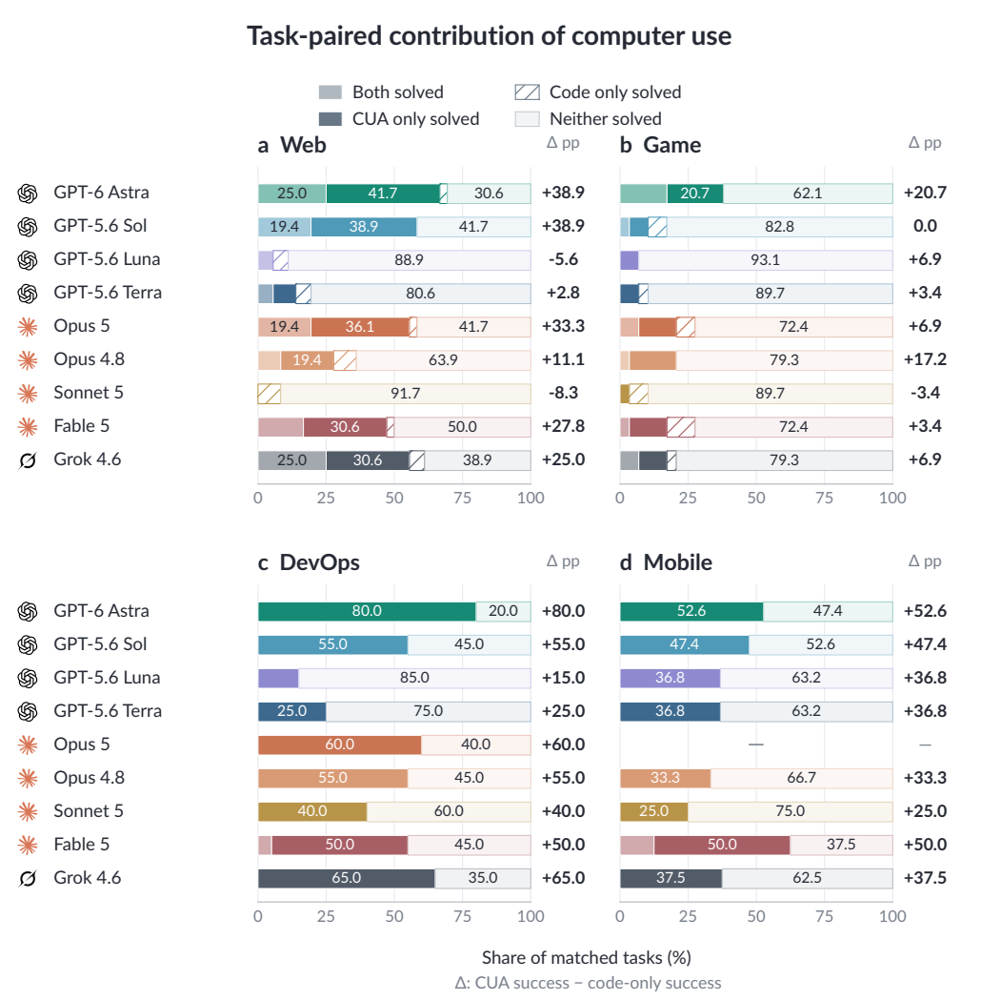
Every frontier model in the four-domain comparison achieves higher aggregate task success with Hybrid access; GPT-6 Astra gains 48.6 percentage points, from 11.3% to 59.9%. The gains concentrate on tasks whose requirements include application materials, while source-specified subsets have near-zero domain-average changes and substantial variation across models.
| Domain | Type | Tasks | Code-only | Hybrid | Δ pp |
|---|---|---|---|---|---|
| Web | S | 22 | 23.9 | 23.9 | +0.0 |
| Web | M | 14 | 8.9 | 50.9 | +42.0 |
| Game | S | 20 | 10.6 | 10.0 | −0.6 |
| Game | M | 9 | 2.8 | 26.4 | +23.6 |
| DevOps | M | 20 | 0.6 | 48.8 | +48.1 |
| Mobile | M | 20 | 0.6 | 39.4 | +38.8 |
In material-dependent (M) tasks the agent must recover requirements from drawings or displayed behavior, implement them and preserve the surrounding workflow. Source-level execution tests the implementation; application observations supply requirements and feedback that those executions alone may not expose. The same figure also shows the limits: a few Web tasks are solved only with code, and most Game tasks remain unsolved under both conditions.
How agents turn runtime observations into correct changes
Four released GPT-6 Astra attempts, one per domain, as reviewed in the paper (Figures 28 to 31). Each card shows what the agent observed, the consequential source change, and the evaluator's verdict. Click a card to enlarge.
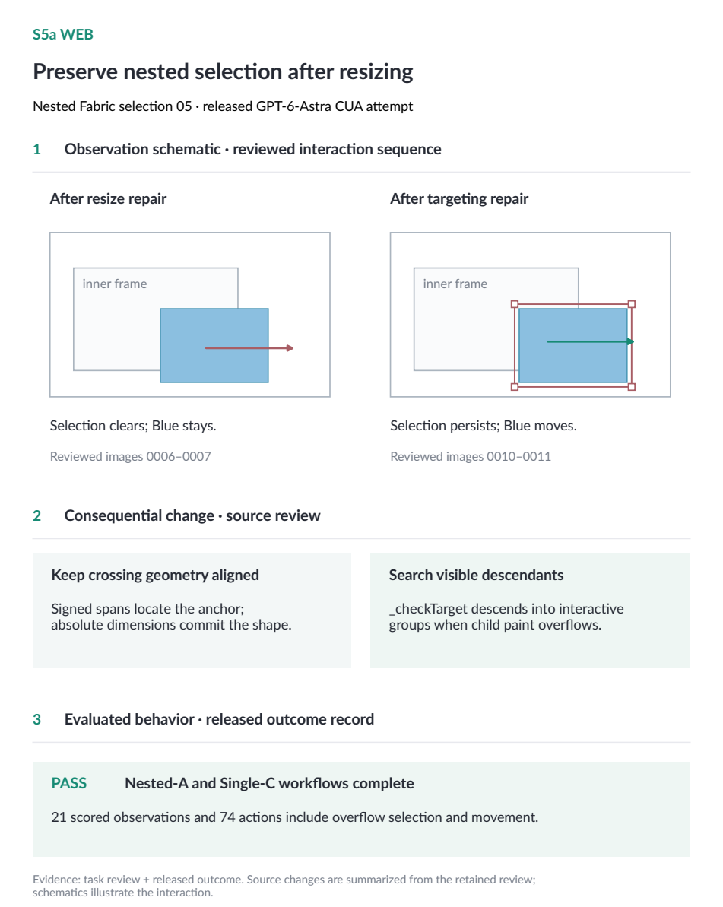
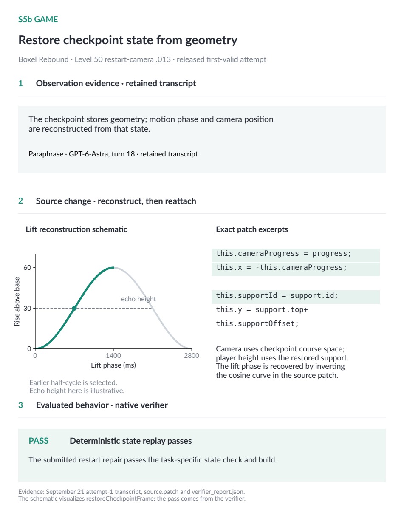
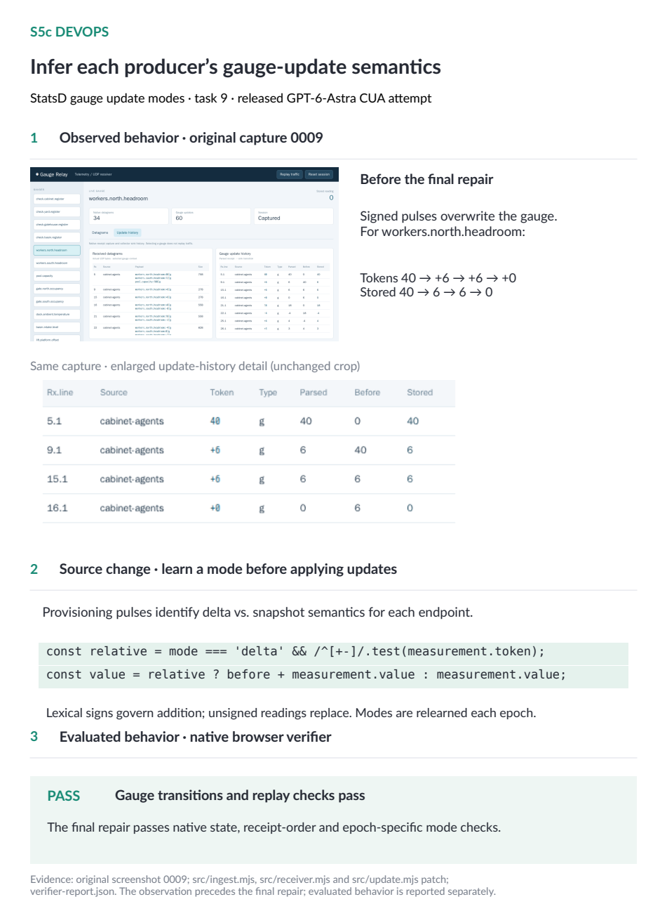
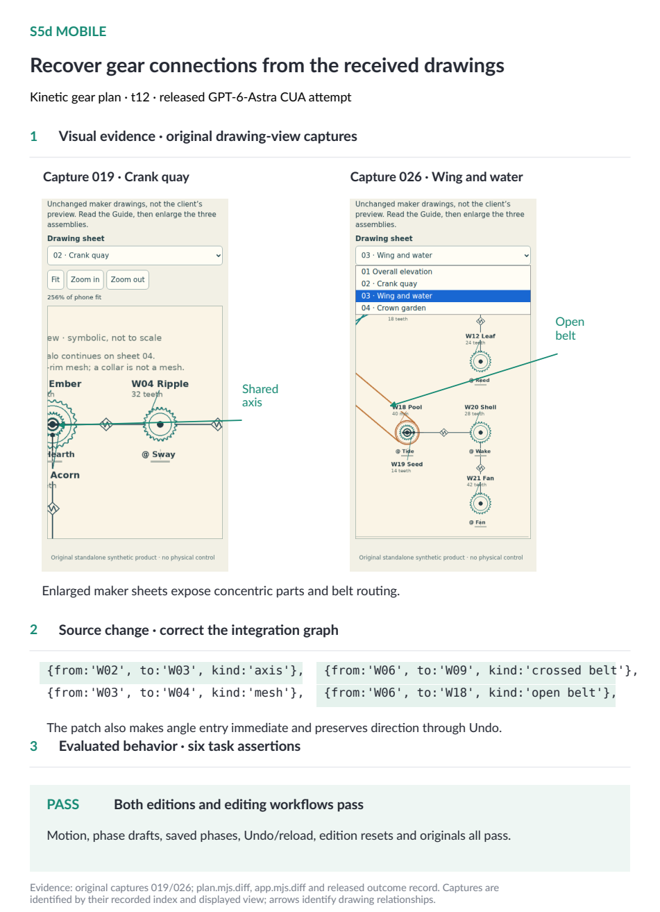
Where repairs still fail
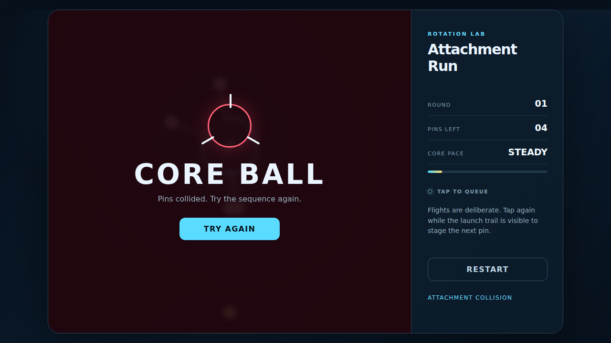
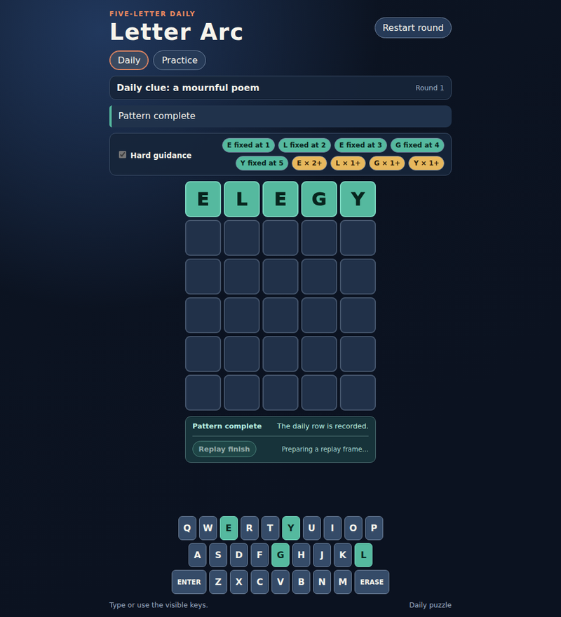
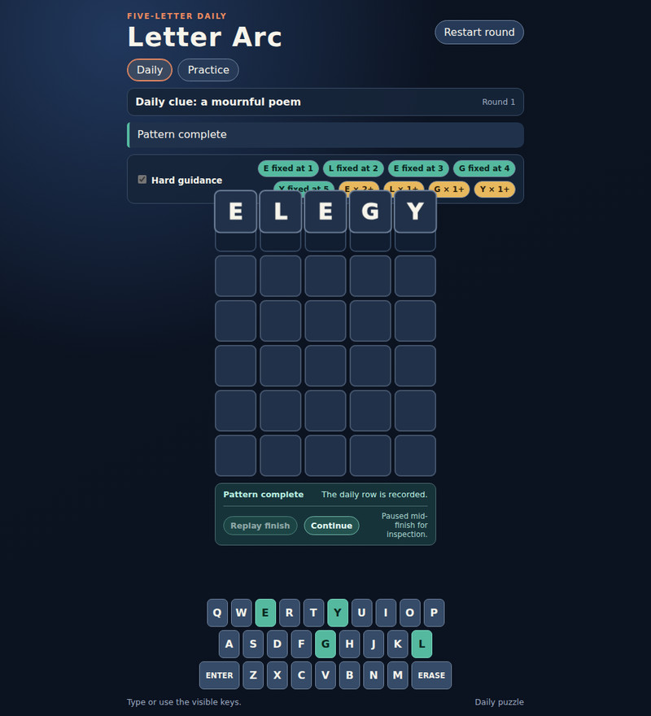
Evaluation
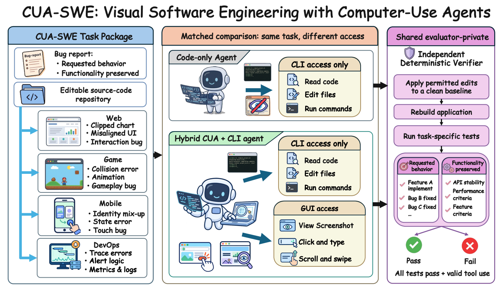
What counts as a success
Task check
Does the requested behavior work? Tests execute the rebuilt application under controlled interaction sequences and assert on the rendered interface, runtime behavior or internal application state.
Regression check
Does designated existing behavior still work? The same tests cover the functionality the task says must be preserved, so a fix that breaks normal play, editing or navigation fails.
Permitted-change check
Did the patch stay inside the allowed scope? Edits outside the files the task permits fail regardless of test results.
These three checks give patch correctness. Reported task success additionally requires a valid trajectory: the run used only the interfaces allowed by its condition and, for Hybrid runs, actually observed the screenshots. Correctness depends on the behavior of the submitted program, not on matching the reference patch; the evaluator may inspect privileged state such as a game board that the agent only sees rendered.
How tasks are built and validated
Each task starts from a software behavior that can be reproduced in the running application and modified in the codebase. An LLM author constructs the instruction, initial codebase, runtime setup, gold reference repair, plausible negative repairs and protected tests; human review checks that the requirement is meaningful and that the relevant runtime evidence is observable through the benchmark interface. The verifier must reject the broken project and every negative repair and accept the gold repair. In the masked-date task, for example, clearing the field should remove the selected date while invalid input should keep it; a repair that clears the selection in both cases fails. Reviewed construction-time agent trials then guide neighboring variants that extend each task family's difficulty range.
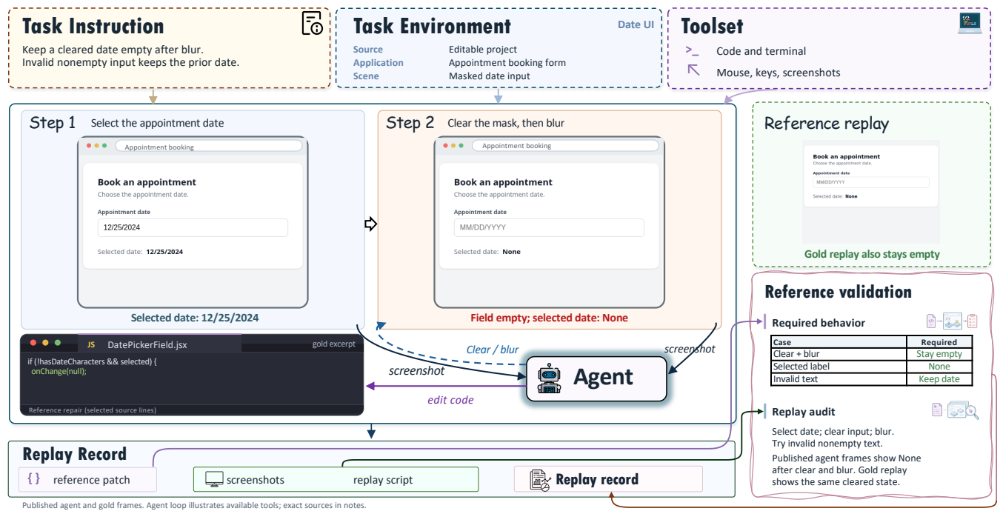
Citation
CUA-SWE: When Computer-Use Agents Meet Visual Software Engineering. arXiv:2609.32600, 2026. Abstract ↗ · PDF ↗ · Code and task bundles ↗ · Dataset on Hugging Face ↗ · Recorded trajectories ↗
@misc{wang2026cuaswe,
title = {CUA-SWE: When Computer-Use Agents Meet Visual Software Engineering},
author = {Wang, Prince Zizhuang and Liang, Chenhao and Xu, Zelong and Yuan, Aojie and Zhou, Xiaolin and Zhang, Haiyue and Zhao, Yue and Hu, Xiyang and Jiang, Shuli},
year = {2026},
eprint = {2609.32600},
archivePrefix = {arXiv},
url = {https://arxiv.org/abs/2609.32600}
}